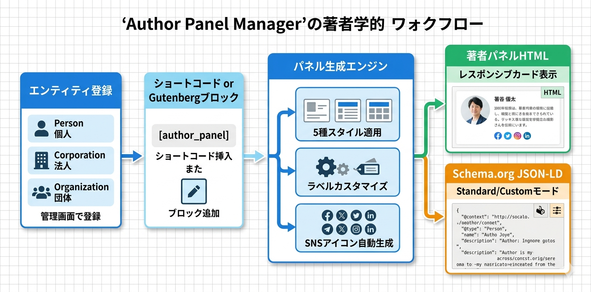

Kashiwazaki SEO Author Panel Manager マニュアル

Kashiwazaki SEO Author Panel Manager は、WordPressサイトで著者・企業・組織のエンティティ情報を一元管理し、Schema.org準拠のJSON-LDとともにフロントエンドに著者パネルを表示するSEOプラグインです。ショートコード・Gutenbergブロック・5種類のパネルスタイルを備え、柔軟な著者情報の表示を実現します。
検索エンジンやAIシステムがコンテンツの信頼性を評価する上で、著者・組織のエンティティ情報は重要なシグナルとなります。本プラグインはPerson・Corporation・Organizationの3種類のエンティティを専用テーブルで管理し、構造化データとビジュアルパネルの両面からE-E-A-T（経験・専門性・権威性・信頼性）の向上を支援します。
主な機能
エンティティ管理
Person・Corporation・Organizationの3タブで著者・企業・組織情報を一元管理
Schema.org JSON-LD
エンティティ情報からPerson/Organization構造化データを自動生成・出力
パネル表示
5スタイル（default, dark, accent, minimal, card）+ショートコード+Gutenbergブロック対応
プラグインの特長
- 3種類のエンティティタイプ（Person / Corporation / Organization）を専用DBテーブルで管理
- Schema.org準拠のJSON-LDを自動出力（standardモード：自己完結型 / customモード：既存スキーマ連携）
- 5種類のパネルスタイル（default, dark, accent, minimal, card）から選択可能
- ショートコード
[author_panel]で任意の場所にパネルを挿入 - Gutenbergブロック
kapm/author-panelでビジュアルエディターから直接配置 - REST API（kapm/v1）によるエンティティデータの外部連携
- wp_optionsを使用せず、専用テーブル（apm_persons, apm_corporations, apm_organizations）でデータ管理
- AJAX・Cron・外部APIへの依存なし。軽量で安全な設計

SEO・GEO（生成AI最適化）への効果
E-E-A-Tシグナルの強化
本プラグインは著者・組織のエンティティ情報をSchema.org準拠のJSON-LDで構造化出力します。Person/Organizationスキーマにより、検索エンジンがコンテンツの著者や発信元の専門性・権威性・信頼性を正確に評価できるようになります。
ナレッジグラフへの貢献
sameAsプロパティにより、著者や組織のSNSアカウント・公式サイト・Wikipediaページなどの外部プロフィールと連携できます。これにより、Googleのナレッジグラフにエンティティが認識される可能性が高まります。
Core Web Vitals への影響ゼロ
フロントエンドはCSS（public/css/panel-style.css）のみで動作します。JavaScriptを使用しないため、Largest Contentful Paint（LCP）やInteraction to Next Paint（INP）などのCore Web Vitals指標に悪影響を与えません。
生成AI（GEO）への対応
構造化されたエンティティデータは、AIがコンテンツの著者情報や組織の信頼性を正確に理解するのに役立ちます。Person/Organizationスキーマにより、著者の経歴・役職・関連URLなどが機械可読な形式で提供されるため、AI検索エンジンやLLMベースのシステムがコンテンツの信頼性をより正確に評価できるようになります。
目次（マニュアル構成）
| ページ | 内容 |
|---|---|
| 概要 | プラグインの機能概要、SEO/GEO効果、動作要件 |
| インストール・初期設定 | インストール手順、初期設定、ショートコード・ブロックの使い方 |
| エンティティ管理・パネル表示 | Person/Corporation/Organizationの管理、パネルスタイル、Customモード |
| トラブルシューティング | よくある問題と対処法、技術仕様、アーキテクチャ |
動作要件
| 項目 | 要件 |
|---|---|
| WordPress | 6.0 以上 |
| PHP | 8.0 以上 |
| ライセンス | GPL-2.0+ |
| 対応ブラウザ | Chrome、Firefox、Safari、Edge（最新版） |
インストール後すぐに使い始めたい場合は、インストール・初期設定ページに進んでください。